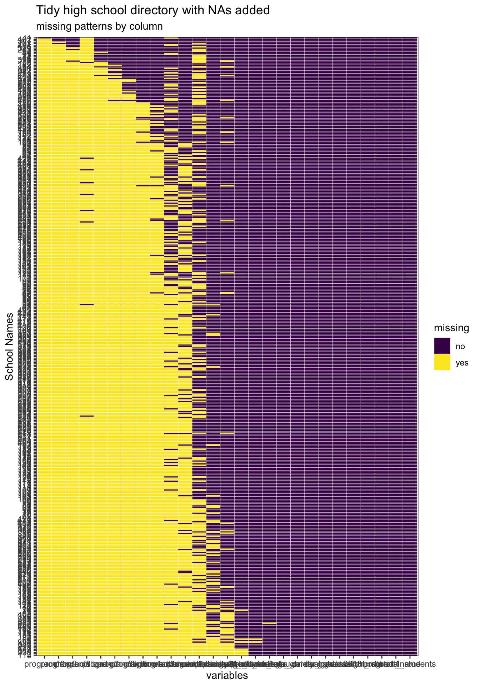
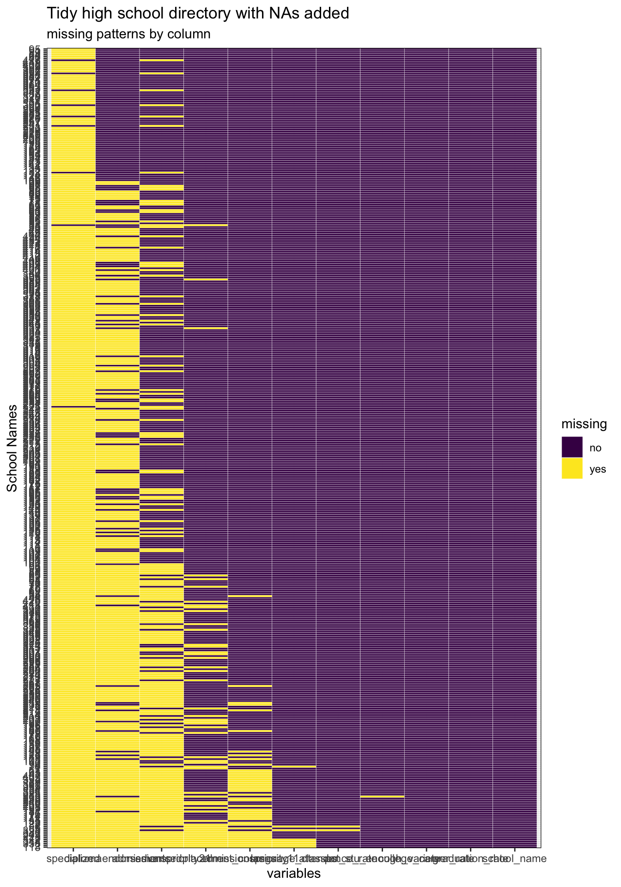

Chapter 4 Missing values
Some data in high school directory not available for all schools in the demographics dataset, and vice versa despite they are both from the DOE.
4.1 Missing values by column
In the directory dataset, there are too many variables to consider, as well as missing values, due to the difference among schools in their offered programs. For example, some schools might have 10 different programs, offered, while others may have only 1. Also, some might have several different admission requirements per program and some programs might not, etc. These are the reasons for the extensive amount of variables, and missing values, as can be seen below.
## # A tibble: 6 x 11
## ell_programs program1 program2 program3 program4 program5 program6 program7
## <chr> <chr> <chr> <chr> <chr> <chr> <chr> <chr>
## 1 English as … Academy… Compute… <NA> <NA> <NA> <NA> <NA>
## 2 English as … Interna… <NA> <NA> <NA> <NA> <NA> <NA>
## 3 English as … Theater… <NA> <NA> <NA> <NA> <NA> <NA>
## 4 English as … Social … <NA> <NA> <NA> <NA> <NA> <NA>
## 5 English as … Brookly… <NA> <NA> <NA> <NA> <NA> <NA>
## 6 English as … West En… <NA> <NA> <NA> <NA> <NA> <NA>
## # … with 3 more variables: program8 <chr>, program9 <chr>, program10 <chr>## # A tibble: 6 x 11
## ell_programs program1 program2 program3 program4 program5 program6 program7
## <chr> <chr> <chr> <chr> <chr> <chr> <chr> <chr>
## 1 English as … Discove… <NA> <NA> <NA> <NA> <NA> <NA>
## 2 English as … Humanit… <NA> <NA> <NA> <NA> <NA> <NA>
## 3 English as … Veterin… Carver … <NA> <NA> <NA> <NA> <NA>
## 4 English as … Enginee… <NA> <NA> <NA> <NA> <NA> <NA>
## 5 English as … Constru… Archite… Academy… <NA> <NA> <NA> <NA>
## 6 English as … Pre-Eng… <NA> <NA> <NA> <NA> <NA> <NA>
## # … with 3 more variables: program8 <chr>, program9 <chr>, program10 <chr>## # A tibble: 6 x 70
## admissionsprior… admissionsprior… admissionsprior… admissionsprior…
## <chr> <chr> <chr> <chr>
## 1 Open to New Yor… <NA> <NA> <NA>
## 2 <NA> <NA> <NA> <NA>
## 3 Open to New Yor… <NA> <NA> <NA>
## 4 Priority to con… Then to Distric… Then to Manhatt… Then to New Yor…
## 5 <NA> <NA> <NA> <NA>
## 6 Priority to con… Then to New Yor… <NA> <NA>
## # … with 66 more variables: admissionspriority51 <chr>,
## # admissionspriority61 <lgl>, admissionspriority71 <lgl>,
## # admissionspriority12 <chr>, admissionspriority22 <chr>,
## # admissionspriority32 <chr>, admissionspriority42 <chr>,
## # admissionspriority52 <lgl>, admissionspriority62 <lgl>,
## # admissionspriority72 <lgl>, admissionspriority13 <chr>,
## # admissionspriority23 <chr>, admissionspriority33 <chr>,
## # admissionspriority43 <lgl>, admissionspriority53 <lgl>,
## # admissionspriority63 <lgl>, admissionspriority73 <lgl>,
## # admissionspriority14 <chr>, admissionspriority24 <chr>,
## # admissionspriority34 <chr>, admissionspriority44 <chr>,
## # admissionspriority54 <lgl>, admissionspriority64 <lgl>,
## # admissionspriority74 <lgl>, admissionspriority15 <chr>,
## # admissionspriority25 <chr>, admissionspriority35 <chr>,
## # admissionspriority45 <lgl>, admissionspriority55 <lgl>,
## # admissionspriority65 <lgl>, admissionspriority75 <lgl>,
## # admissionspriority16 <chr>, admissionspriority26 <chr>,
## # admissionspriority36 <lgl>, admissionspriority46 <lgl>,
## # admissionspriority56 <lgl>, admissionspriority66 <lgl>,
## # admissionspriority76 <lgl>, admissionspriority17 <chr>,
## # admissionspriority27 <chr>, admissionspriority37 <lgl>,
## # admissionspriority47 <lgl>, admissionspriority57 <lgl>,
## # admissionspriority67 <lgl>, admissionspriority77 <lgl>,
## # admissionspriority18 <chr>, admissionspriority28 <chr>,
## # admissionspriority38 <chr>, admissionspriority48 <lgl>,
## # admissionspriority58 <lgl>, admissionspriority68 <lgl>,
## # admissionspriority78 <lgl>, admissionspriority19 <chr>,
## # admissionspriority29 <chr>, admissionspriority39 <lgl>,
## # admissionspriority49 <lgl>, admissionspriority59 <lgl>,
## # admissionspriority69 <lgl>, admissionspriority79 <lgl>,
## # admissionspriority110 <chr>, admissionspriority210 <lgl>,
## # admissionspriority310 <lgl>, admissionspriority410 <lgl>,
## # admissionspriority510 <lgl>, admissionspriority610 <lgl>,
## # admissionspriority710 <lgl>## # A tibble: 427 x 120
## requirement1_1 requirement1_2 requirement1_3 requirement1_4 requirement1_5
## <chr> <chr> <chr> <chr> <chr>
## 1 Attendance <NA> <NA> <NA> <NA>
## 2 <NA> <NA> <NA> <NA> <NA>
## 3 Attendance <NA> <NA> <NA> <NA>
## 4 Attendance <NA> <NA> <NA> <NA>
## 5 <NA> <NA> <NA> <NA> <NA>
## 6 Attendance <NA> <NA> <NA> <NA>
## 7 Individual In… Individual In… Individual In… Individual In… Individual In…
## 8 <NA> <NA> <NA> <NA> <NA>
## 9 <NA> <NA> <NA> <NA> <NA>
## 10 Course Grades… <NA> <NA> <NA> <NA>
## # … with 417 more rows, and 115 more variables: requirement1_6 <chr>,
## # requirement1_7 <chr>, requirement1_8 <chr>, requirement1_9 <chr>,
## # requirement1_10 <chr>, requirement2_1 <chr>, requirement2_2 <chr>,
## # requirement2_3 <chr>, requirement2_4 <chr>, requirement2_5 <chr>,
## # requirement2_6 <chr>, requirement2_7 <chr>, requirement2_8 <chr>,
## # requirement2_9 <chr>, requirement2_10 <chr>, requirement3_1 <chr>,
## # requirement3_2 <chr>, requirement3_3 <chr>, requirement3_4 <chr>,
## # requirement3_5 <chr>, requirement3_6 <chr>, requirement3_7 <chr>,
## # requirement3_8 <chr>, requirement3_9 <chr>, requirement3_10 <chr>,
## # requirement4_1 <chr>, requirement4_2 <chr>, requirement4_3 <chr>,
## # requirement4_4 <chr>, requirement4_5 <chr>, requirement4_6 <chr>,
## # requirement4_7 <chr>, requirement4_8 <chr>, requirement4_9 <chr>,
## # requirement4_10 <chr>, requirement5_1 <chr>, requirement5_2 <chr>,
## # requirement5_3 <chr>, requirement5_4 <chr>, requirement5_5 <chr>,
## # requirement5_6 <chr>, requirement5_7 <chr>, requirement5_8 <chr>,
## # requirement5_9 <chr>, requirement5_10 <chr>, requirement6_1 <chr>,
## # requirement6_2 <chr>, requirement6_3 <chr>, requirement6_4 <chr>,
## # requirement6_5 <chr>, requirement6_6 <chr>, requirement6_7 <chr>,
## # requirement6_8 <chr>, requirement6_9 <chr>, requirement6_10 <chr>,
## # requirement7_1 <chr>, requirement7_2 <chr>, requirement7_3 <chr>,
## # requirement7_4 <lgl>, requirement7_5 <chr>, requirement7_6 <lgl>,
## # requirement7_7 <lgl>, requirement7_8 <lgl>, requirement7_9 <lgl>,
## # requirement7_10 <lgl>, requirement8_1 <chr>, requirement8_2 <chr>,
## # requirement8_3 <lgl>, requirement8_4 <lgl>, requirement8_5 <lgl>,
## # requirement8_6 <lgl>, requirement8_7 <lgl>, requirement8_8 <lgl>,
## # requirement8_9 <lgl>, requirement8_10 <lgl>, requirement9_1 <lgl>,
## # requirement9_2 <lgl>, requirement9_3 <lgl>, requirement9_4 <lgl>,
## # requirement9_5 <lgl>, requirement9_6 <lgl>, requirement9_7 <lgl>,
## # requirement9_8 <lgl>, requirement9_9 <lgl>, requirement9_10 <lgl>,
## # requirement10_1 <lgl>, requirement10_2 <lgl>, requirement10_3 <lgl>,
## # requirement10_4 <lgl>, requirement10_5 <lgl>, requirement10_6 <lgl>,
## # requirement10_7 <lgl>, requirement10_8 <lgl>, requirement10_9 <lgl>,
## # requirement10_10 <lgl>, requirement11_1 <lgl>, requirement11_2 <lgl>,
## # requirement11_3 <lgl>, requirement11_4 <lgl>, requirement11_5 <lgl>, …As such, we cannot assess the pattern of missing values properly in the raw data itself, other than knowing that the missing values are dur to difference in the number of offered programs. Thus, we try to see missing patterns in the tidied dataset.
## program10 program9 program8
## 426 423 418
## specialized program7 program6
## 418 409 401
## program5 program4 program3
## 390 377 353
## diplomaendorsements program2 admissionspriority21
## 289 276 183
## advancedplacement_courses admissionspriority11 language_classes
## 52 44 8
## attendance_rate pct_stu_enough_variety dbn
## 2 1 0
## school_name Borough neighborhood
## 0 0 0
## total_students grades2018 finalgrades
## 0 0 0
## program1 graduation_rate college_career_rate
## 0 0 0 There are too many variables and observations to be legible, so we drop out variables that have none missing values such as school name, dbn, etc. We also exclude programs, since the missing pattern is availability.
 The pattern is still difficult to observe becasue of the vast number of observations. Thus, let’s try to look at this by grouping them by borough.
## # A tibble: 5 x 4
## Borough num_schools num_na percent_na
## <chr> <int> <int> <dbl>
## 1 BROOKLYN 119 305 2.56
## 2 BRONX 110 252 2.29
## 3 MANHATTAN 107 244 2.28
## 4 QUEENS 80 174 2.17
## 5 STATEN IS 11 22 2The data provided are mostly character data, not numerical scores to compare against. Also, the missing data in this data set seeems to be more related to the characteristic of the school rather than revealing a certain kind of pattern.